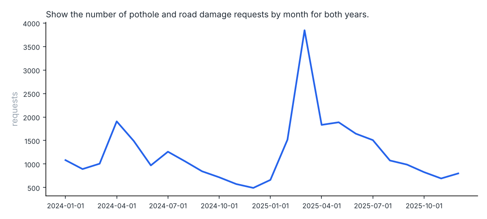
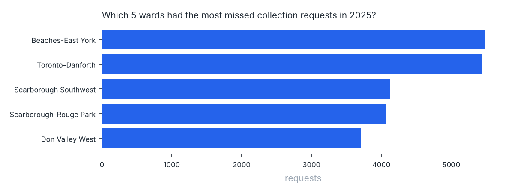

Ask Toronto 311
Type a question in plain English about 937,312 requests Toronto residents made to 311 in 2024 and 2025. A small open-source model writes the SQL, a guard checks it, PostgreSQL runs it with read-only access, and you get a table and a chart back. No paid API: it runs on a laptop CPU.
83%of 100 test questions answered correctly (7B model)
36% → 73%same 3B model, once it gets data notes and similar examples
$0to run. Local models through llama.cpp or Ollama
How it works
- Load. The city's yearly CSV files go into PostgreSQL. 810 raw request types are grouped into 15 plain topics, because the city renamed many types between 2024 and 2025.
- Describe. The model gets the tables plus short data notes: real column values, what "open" means, which division forestry moved to, what winter means.
- Retrieve. The three solved examples closest to the new question are pulled from a small bank with BM25 search (none of them are test questions).
- Write and check. The model writes one query. sqlglot parses it, allows a single SELECT on known tables, and caps the rows.
- Run safely. The query runs as a database role that can only read, with a 15 second timeout. A DELETE fails at the database even if it slips past the parser.
- Fix and answer. If the query errors or comes back empty, the error goes back to the model for up to two more tries. A chart is picked from the shape of the result.
What moved the score
Each row adds one piece to the agent and reruns all 100 questions on Qwen2.5-Coder 3B. A question counts as correct only when the query's result matches the answer I checked by hand.

The data notes and the examples did almost all the work. Self-correction rescued nothing: once the model had context, only 3 of 100 queries errored at all. The other misses were quiet. The query ran fine and returned the wrong number, which no retry loop can catch. I also tried telling the model not to copy filters from the examples. It scored 71% against 73% without it, which is noise on 100 questions, so it stays off.

Bigger model, same agent

The 7B model is the best trade: 10 more points than 3B for about twice the wait. Times are on a 4-core CPU with no GPU.
Real answers from the test run
Straight from the 7B run, including one it got wrong.
Show the number of pothole and road damage requests by month for both years.
SELECT EXTRACT(YEAR FROM created_at) AS year, CAST(DATE_TRUNC('MONTH', created_at) AS DATE) AS month, COUNT(*) AS requests FROM v_requests WHERE topic = 'Potholes and road damage' GROUP BY year, month ORDER BY year, month LIMIT 500| year | month | requests |
|---|
| 2024 | 2024-01-01 | 1083 |
| 2024 | 2024-02-01 | 893 |
| 2024 | 2024-03-01 | 1007 |
| 2024 | 2024-04-01 | 1907 |
| 2024 | 2024-05-01 | 1490 |
| 2024 | 2024-06-01 | 971 |
| 2024 | 2024-07-01 | 1262 |
| 2024 | 2024-08-01 | 1058 |
16 more rows

Correct · 16.2s on a 4-core CPU
Which 5 wards had the most missed collection requests in 2025?
SELECT ward_name, COUNT(*) AS requests FROM v_requests WHERE topic = 'Missed collection' AND EXTRACT(YEAR FROM created_at) = 2025 AND ward_id IS NOT NULL GROUP BY ward_name ORDER BY requests DESC LIMIT 5
| ward_name | requests |
|---|
| Beaches-East York | 5487 |
| Toronto-Danforth | 5437 |
| Scarborough Southwest | 4119 |
| Scarborough-Rouge Park | 4065 |
| Don Valley West | 3705 |

Correct · 16.8s on a 4-core CPU
How many forestry requests were there in 2024 and 2025 combined?
SELECT COUNT(*) AS requests FROM v_requests WHERE (division = 'Parks, Forestry & Recreation' OR division = 'Environment, Climate & Forestry') AND EXTRACT(YEAR FROM created_at) IN (2024, 2025) LIMIT 500
Correct · 15.0s on a 4-core CPU
What is the ratio of 2025 to 2024 snow and ice requests, rounded to 2 decimals?
SELECT ROUND(CAST((COUNT(*) FILTER(WHERE EXTRACT(YEAR FROM created_at) = 2025)) AS DECIMAL) / COUNT(*) FILTER(WHERE EXTRACT(YEAR FROM created_at) = 2024), 2) AS ratio FROM v_requests WHERE topic = 'Snow and ice' LIMIT 500
Correct · 18.5s on a 4-core CPU
For each ward, which topic had the most requests? Return ward name, topic and count.
WITH c AS (SELECT ward_name, topic, COUNT(*) AS requests, RANK() OVER (PARTITION BY ward_name ORDER BY COUNT(*) DESC) AS rnk FROM v_requests WHERE ward_id IS NOT NULL AND EXTRACT(YEAR FROM created_at) = 2025 GROUP BY ward_name, topic) SELECT ward_name, topic, requests FROM c WHERE rnk = 1 ORDER BY ward_name LIMIT 500
| ward_name | topic | requests |
|---|
| Beaches-East York | Missed collection | 5487 |
| Davenport | Bins | 6815 |
| Don Valley East | Missed collection | 2186 |
| Don Valley North | Bins | 2625 |
| Don Valley West | Missed collection | 3705 |
| Eglinton-Lawrence | Bins | 4808 |
| Etobicoke Centre | Bins | 3324 |
| Etobicoke North | Bins | 2967 |
17 more rows
Wrong: wrong result · 24.8s on a 4-core CPU
Where it still goes wrong
The 17 misses from the 7B run fall into four groups:
- Copying from examples. It adds a year filter the question never asked for, because a retrieved example had one.
- Keyword instead of topic. It searches request names for "missed collection" or "bin lid" when the right move is the topic column. Those exact words rarely appear in the city's type names.
- Time ranges that wrap. "Between 11 pm and 5 am" becomes
BETWEEN 23 AND 5, which matches nothing.
- Two-step math. Averages of counts and "how many wards had more X than Y" need a subquery, and it often skips one.
The fix for each one is more context, not a bigger loop: a note about wrapping hours, a few examples of two-step counts, and returning the topic list with each question.